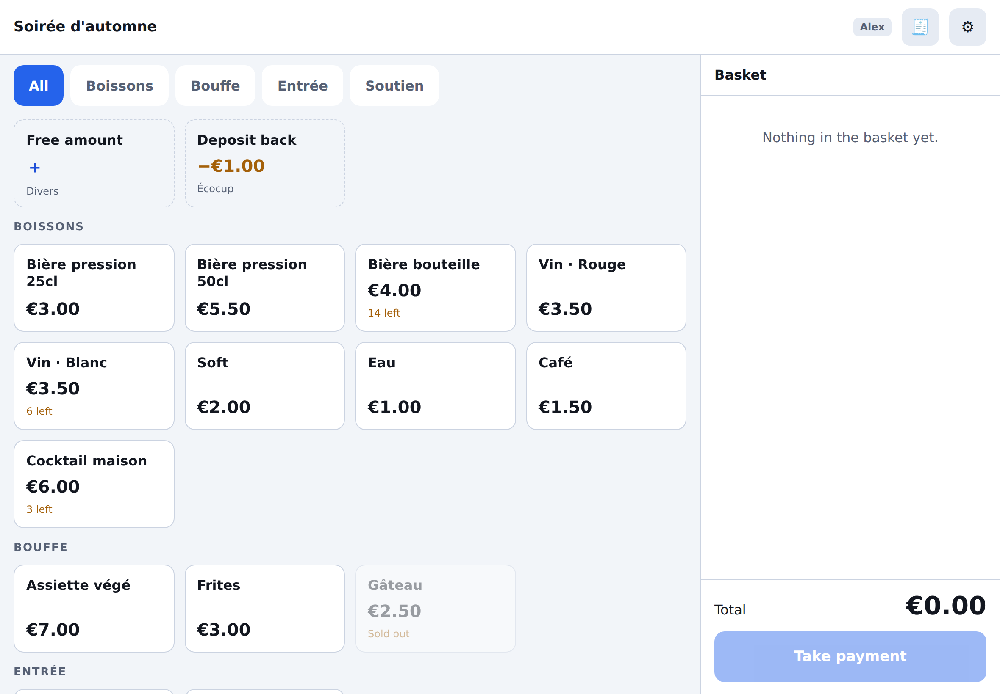
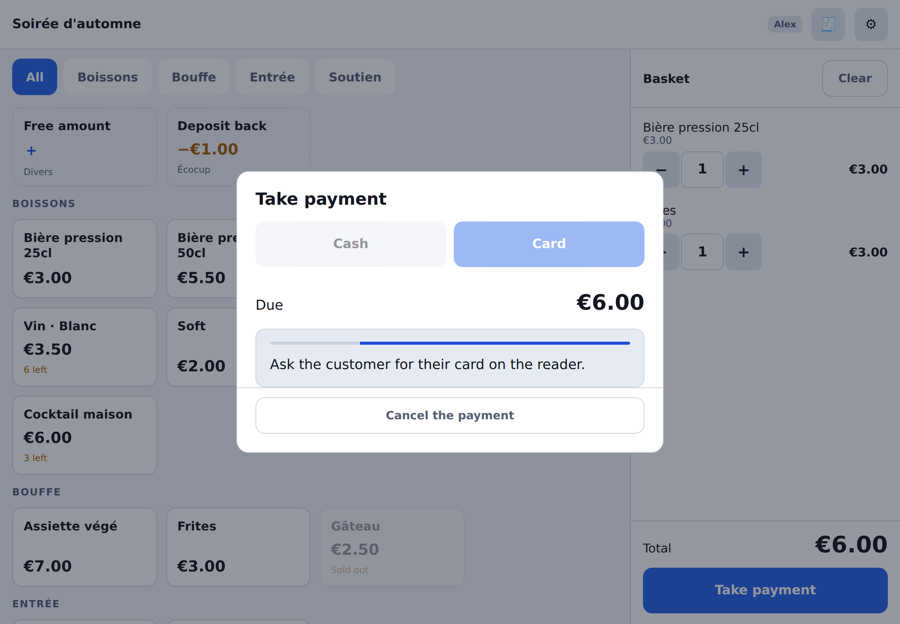
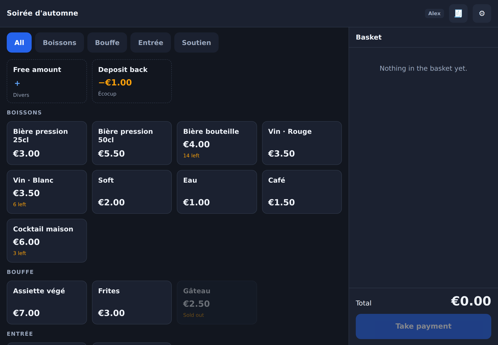

Alpha — running a real bar and a real door since September 2026
A till for pretix that runs in a browser
Sell tickets and drinks at the door from any tablet or phone. An open-source point of sale for a self-hosted pretix: a Django plugin and a progressive web app, with no native app to install and no licence per device.
pretix already has an excellent POS product, pretixPOS. It is an Android app backed by a pretix Enterprise plugin, and for a self-hosted installation that licence is the expensive part. This is a smaller, narrower alternative for people who need a till, run pretix themselves, and would rather not pay for one.



What it does
Everything below is in the software today, covered by tests that run on every push and used at a real event.
Runs in the browser
Safari or Chrome, installed to the home screen. No app store, no device management, no licence per till. Pair a device by scanning the QR code pretix shows for it.
Scanning at the door
Continuous camera scanning with a verdict readable at arm's length. It calls pretix' own check-in endpoint, so the rules and every refusal reason come from pretix rather than a reimplementation.
A live head count
How many people are inside right now, counted over admission products across every door and till. Tapping it opens a flow chart of tickets expected, admitted, on site and scanned back out.
A role per device
A tablet is the bar till or the door, assigned in the back office, and each sells only the product categories it is there for. A door volunteer stepping out of the scanner to sell a ticket no longer lands on the whole catalogue.
A card reader the server drives
Pair a SumUp Solo to your account from the back office and give it to a till. Choosing card puts the basket on the reader and waits for the customer. The server prices the basket when it asks for the card and books the order from that same priced basket, so the charge and the order cannot disagree.
Cash, change and cup deposits
Change is worked out for you, and the common notes are one tap. A deposit is an ordinary product; the return is a button that takes its price off the basket, so "two beers and I am giving three cups back" is one transaction and one amount to settle.
It keeps working offline
A dropout does not stop the till. It keeps selling from the catalogue it cached and keeps scanning against a guest list it carries, then replays the queue in order under the same idempotency keys — a replay never sells twice — and reports what needs a human.
An append-only journal
One row per sale, never updated and never deleted, each carrying the hash of the one before it, so editing history after the fact is detectable. With a CSV export, takings per till and per cashier, and an integrity check you can run from cron.
Orders land in pretix
Ordinary paid orders on a sales channel of their own, with the cash and card split visible in pretix' own reporting. Tickets are checked in as they are sold, so the customer walks straight in.
The two rules that make it safe to run a till this way
A till is a browser on a counter. Anyone can open its developer tools. Both of these are enforced on the server, which is what makes them mean something.
The till never sends a price
It sends product identifiers and quantities, and the server resolves what that costs. A tampered-with or simply out-of-date app cannot sell a 40 € ticket for 4 €. The free-amount button is the one deliberate exception, and it is fenced in: only on the single product set aside for it, only above zero, and only with a reason attached.
Every checkout carries an idempotency key
It is minted when the payment panel opens and reused for every retry, so a timeout that actually committed hands back the original order instead of selling the same tickets twice. It is what makes the offline queue safe to replay.
What it deliberately does not do
Being clear about this up front will save you an evaluation.
- No fiscal certification. The journal is designed so that compliance work is possible later, but no claim is made about French, German or Austrian cash-register law. If you are VAT-liable, talk to your accountant first.
- No receipt printing and no ticket printing.
- No Tap to Pay. Stripe only exposes it through native iOS and Android SDKs, so it is impossible from a web app.
- No partial refunds from the till. A sale is cancelled whole, then rung up again corrected; refunding two of three beers is a back office job.
- No open refund to a card. SumUp only refunds against a transaction of its own, so a returned cup deposit is paid out of the drawer. Cancelling a card sale is a different matter and is fully automatic.
- No offline cancellations. A credit note needs the server, so corrections wait for the network. Selling and scanning do not.
- No check-in questions. A product that requires answers at the door is refused with a clear reason rather than half-checked-in. Use pretixSCAN for those.
- QR codes only when scanning. Tickets printed with a Code128 or PDF417 barcode have to be typed or read with a keyboard-wedge scanner.
Installing it
You need a self-hosted pretix 2024.7.0 or newer, Python 3.11+ and HTTPS — service workers, the wake lock and home-screen installation all require a secure context. pretix Hosted does not allow custom plugins, so this cannot be used there.
pip install "pretix-openpos @ git+https://github.com/clabeuhtegrite/pretix-openpos"
python -m pretix migrate
python -m pretix rebuild
Not on PyPI yet, so it is installed from the repository. Pin a commit if you would rather not follow main.
If you run pretix in Docker or Kubernetes, the repository's
deploy/Dockerfile bakes the plugin into the official image and
builds the app's JavaScript inside it, so the bundle and the plugin serving it
always carry the same version.
Then, in pretix
- Turn the plugin on for the event.
- Make products sellable at the till by ticking the Open POS channel on them. A product that exists only on site is one with that channel alone.
- Price them in pretix, on the products themselves. The till has no price list of its own. To charge more at the door than in advance, make it a separate product on the Open POS channel — "Door entry", say — so that one name is worth one price and the takings stay readable.
- Pick the check-in list, so tickets are checked in as they are sold.
- Pair a device in pretix' own device settings and scan the QR code from the app.
The README covers every step in full, including the card reader and the optional buttons.